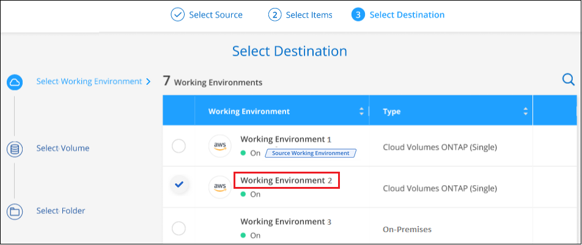
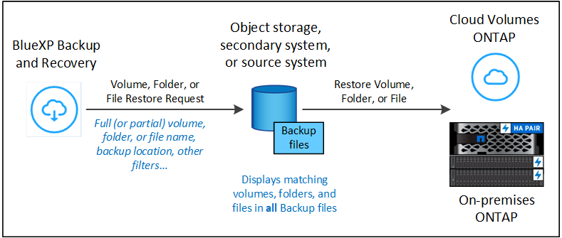

Versionshinweise
Versionshinweise
ONTAP-Daten aus Backup-Dateien wiederherstellen
 Änderungen vorschlagen
Änderungen vorschlagen
Backups Ihrer ONTAP Volume-Daten sind über die Standorte Ihrer Backups verfügbar: Snapshot Kopien, replizierte Volumes und im Objekt-Storage gespeicherte Backups. Sie können von jedem dieser Backup-Standorte aus Daten zu einem bestimmten Zeitpunkt wiederherstellen. Sie können ein gesamtes ONTAP-Volume aus einer Backup-Datei wiederherstellen. Wenn Sie aber nur einige wenige Dateien wiederherstellen müssen, können Sie einen Ordner oder einzelne Dateien wiederherstellen.
-
Sie können ein Volume (als neues Volume) in der ursprünglichen Arbeitsumgebung, in einer anderen Arbeitsumgebung, in der dieselben Cloud-Konten verwendet werden, oder auf einem lokalen ONTAP System wiederherstellen.
-
Sie können einen Ordner auf einem Volume in der ursprünglichen Arbeitsumgebung, auf einem Volume in einer anderen Arbeitsumgebung, die denselben Cloud-Account verwendet, oder auf einem Volume in einem lokalen ONTAP System wiederherstellen.
-
Sie können Dateien auf einem Volume in der ursprünglichen Arbeitsumgebung, auf einem Volume in einer anderen Arbeitsumgebung, in der dieselben Cloud-Konten verwendet werden, oder auf einem Volume in einem lokalen ONTAP System wiederherstellen.
Zum Wiederherstellen von Daten von Backup-Dateien auf ein Produktionssystem ist eine gültige BlueXP Backup- und Recovery-Lizenz erforderlich.
Zusammenfassend sind dies die gültigen Datenflüsse, die Sie verwenden können, um Volume-Daten in einer ONTAP Arbeitsumgebung wiederherzustellen:
-
Sicherungsdatei → wiederhergestelltes Volume
-
Repliziertes Volume → wiederhergestelltes Volume
-
Snapshot Kopie → wiederhergestelltes Volume
Das Restore Dashboard
Mit dem Restore Dashboard können Sie Volume-, Ordner- und Dateiwiederherstellungsvorgänge durchführen. Sie öffnen das Restore Dashboard, indem Sie im BlueXP-Menü auf Backup und Recovery klicken und dann auf die Registerkarte Restore klicken. Sie können auch auf klicken  > Ansicht Restore Dashboard vom Backup- und Recovery-Dienst aus dem Fenster Dienste.
> Ansicht Restore Dashboard vom Backup- und Recovery-Dienst aus dem Fenster Dienste.

|
BlueXP Backup und Recovery müssen bereits für mindestens eine Arbeitsumgebung aktiviert sein und erste Backup-Dateien müssen vorhanden sein. |

Wie Sie sehen können, bietet das Restore Dashboard 2 verschiedene Möglichkeiten, Daten aus Sicherungsdateien wiederherzustellen: Durchsuchen & Wiederherstellen und Suchen & Wiederherstellen.
Vergleichen von Durchsuchen und Wiederherstellen und Suchen und Wiederherstellen
In der Regel ist Browse & Restore besser, wenn Sie ein bestimmtes Volume, einen Ordner oder eine Datei aus der letzten Woche oder einem Monat wiederherstellen müssen - und Sie kennen den Namen und den Speicherort der Datei und das Datum, an dem sie zuletzt in gutem Zustand war. Search & Restore ist in der Regel besser, wenn Sie ein Volume, einen Ordner oder eine Datei wiederherstellen müssen, aber Sie können sich nicht an den genauen Namen oder das Volumen, in dem es sich befindet, oder an das Datum erinnern, an dem es zuletzt in gutem Zustand war.
Diese Tabelle enthält einen Funktionsvergleich der 2 Methoden.
| Suchen Und Wiederherstellen | Suche Und Wiederherstellung |
|---|---|
Durchsuchen Sie eine Ordnerstruktur, um das Volume, den Ordner oder die Datei in einer einzelnen Sicherungsdatei zu finden. |
Suchen Sie nach einem Volume, Ordner oder einer Datei über alle Sicherungsdateien nach einem teilweisen oder vollständigen Datenträgernamen, einem teilweisen oder vollständigen Ordner-/Dateinamen, einem Größenbereich und zusätzlichen Suchfiltern. |
Führt keine Dateiwiederherstellung durch, wenn die Datei gelöscht oder umbenannt wurde, und der Benutzer den ursprünglichen Dateinamen nicht kennt |
Verarbeitet neu erstellte/gelöschte/umbenannte Verzeichnisse und neu erstellte/gelöschte/umbenannte Dateien |
Es sind keine zusätzlichen Ressourcen für Cloud-Provider erforderlich |
Beim Restore aus der Cloud werden pro Konto zusätzliche Bucket- und Public-Cloud-Provider-Ressourcen benötigt. |
Es sind keine zusätzlichen Kosten für Cloud-Provider erforderlich |
Wenn Sie Daten aus der Cloud wiederherstellen, sind zusätzliche Kosten erforderlich, wenn Sie Ihre Backups und Volumes zur Suche nach Suchergebnissen scannen. |
Schnelle Wiederherstellung wird unterstützt. |
Schnelle Wiederherstellung wird nicht unterstützt. |
Diese Tabelle enthält eine Liste gültiger Wiederherstellungsvorgänge, die auf dem Speicherort der Sicherungsdateien basieren.
| Backup-Typ | Suchen Und Wiederherstellen | Suche Und Wiederherstellung | ||||
|---|---|---|---|---|---|---|
Lautstärke wiederherstellen |
* Dateien wiederherstellen* |
Ordner wiederherstellen |
Lautstärke wiederherstellen |
* Dateien wiederherstellen* |
Ordner wiederherstellen |
|
Snapshot Kopie |
Ja. |
Nein |
Nein |
Ja. |
Ja. |
Ja. |
Repliziertes Volume |
Ja. |
Nein |
Nein |
Ja. |
Ja. |
Ja. |
Sicherungsdatei |
Ja. |
Ja. |
Ja. |
Ja. |
Ja. |
Ja. |
Bevor Sie eine der beiden Wiederherstellungsmethoden verwenden können, sollten Sie sicherstellen, dass Sie Ihre Umgebung für die speziellen Ressourcenanforderungen konfiguriert haben. Diese Anforderungen werden in den Abschnitten unten beschrieben.
Siehe Anforderungen und Wiederherstellungsschritte für den Typ der Wiederherstellungsoperation, die Sie verwenden möchten:
-
<<Restoring volumes using Browse & Restore,Stellen Sie Volumes mithilfe von Browse Restore wieder her
-
<<Restoring folders and files using Browse & Restore,Wiederherstellen von Ordnern und Dateien mit Durchsuchen Restore
-
<<Restoring ONTAP data using Search & Restore,Stellen Sie Volumes, Ordner und Dateien mithilfe von Search Restore wieder her
Stellen Sie ONTAP-Daten mithilfe von Durchsuchen und Wiederherstellen wieder her
Bevor Sie mit der Wiederherstellung eines Volumes, Ordners oder einer Datei beginnen, sollten Sie den Namen des Volumes, von dem aus Sie wiederherstellen möchten, den Namen der Arbeitsumgebung und SVM, auf dem sich das Volume befindet, sowie das ungefähre Datum der Sicherungsdatei, aus der Sie wiederherstellen möchten, kennen. Sie können ONTAP Daten von einer Snapshot Kopie, einem replizierten Volume oder von Backups im Objektspeicher wiederherstellen.
Hinweis: Wenn sich die Sicherungsdatei mit den Daten, die Sie wiederherstellen möchten, im Archiv-Cloud-Speicher befindet (beginnend mit ONTAP 9.10.1), dauert der Wiederherstellungsvorgang länger und verursacht Kosten. Zusätzlich muss auf dem Ziel-Cluster für die Volume-Wiederherstellung ONTAP 9.10.1 oder höher, 9.11.1 für die Wiederherstellung von Dateien, 9.12.1 für Google Archive und StorageGRID und 9.13.1 für die Wiederherstellung von Ordnern ausgeführt werden.
|
|
Die hohe Priorität wird nicht unterstützt, wenn Daten aus dem Azure Archiv-Storage auf StorageGRID Systeme wiederhergestellt werden. |
Unterstützte Arbeitsumgebungen und Objekt-Storage-Anbieter durchsuchen und wiederherstellen
Sie können ONTAP-Daten aus einer Backup-Datei in einer sekundären Arbeitsumgebung (einem replizierten Volume) oder im Objektspeicher (einer Backup-Datei) in den folgenden Arbeitsumgebungen wiederherstellen. Snapshot Kopien befinden sich in der Quell-Arbeitsumgebung, sie können nur auf demselben System wiederhergestellt werden.
Hinweis: Sie können ein Volume von jeder Art von Sicherungsdatei wiederherstellen, aber Sie können einen Ordner oder einzelne Dateien nur aus einer Sicherungsdatei im Objektspeicher wiederherstellen.
Aus Objektspeicher (Backup) |
Von Primär (Snapshot) |
Vom Sekundären System (Replikation) |
Zum Ziel Der Arbeitsumgebung |
Amazon S3 |
Cloud Volumes ONTAP in AWS |
Cloud Volumes ONTAP in AWS |
Azure Blob |
Cloud Volumes ONTAP in Azure |
Cloud Volumes ONTAP in Azure |
Google Cloud Storage |
Cloud Volumes ONTAP in Google |
Cloud Volumes ONTAP in Google On-Premises ONTAP System endif::gcp[] |
NetApp StorageGRID |
Lokales ONTAP System |
Lokales ONTAP System |
Zum lokalen ONTAP System |
ONTAP S3 |
Lokales ONTAP System |
Lokales ONTAP System |
Für Browse & Restore kann der Connector an folgenden Orten installiert werden:
-
Für Google Cloud Storage muss der Connector in Ihrer Google Cloud Platform VPC implementiert werden
-
Für StorageGRID muss der Connector in Ihrem Betrieb mit oder ohne Internetzugang bereitgestellt werden
-
Bei ONTAP S3 kann der Connector (mit oder ohne Internetzugang) vor Ort oder in einer Cloud-Provider-Umgebung implementiert werden
Beachten Sie, dass Verweise auf „On-Premises ONTAP Systeme“ Systeme mit FAS, AFF und ONTAP Select Systemen enthalten.
|
|
Wenn die ONTAP-Version auf Ihrem System kleiner als 9.13.1 ist, können Sie keine Ordner oder Dateien wiederherstellen, wenn die Sicherungsdatei mit DataLock & Ransomware konfiguriert wurde. In diesem Fall können Sie das gesamte Volume aus der Sicherungsdatei wiederherstellen und anschließend auf die von Ihnen benötigten Dateien zugreifen. |
Stellen Sie Volumes mithilfe von Browse & Restore wieder her
Wenn Sie ein Volume aus einer Backup-Datei wiederherstellen, erstellt BlueXP Backup und Recovery mithilfe der Daten aus dem Backup ein New Volume. Wenn Sie ein Backup aus dem Objekt-Storage verwenden, können Sie die Daten auf einem Volume in der ursprünglichen Arbeitsumgebung wiederherstellen, in einer anderen Arbeitsumgebung, die sich in demselben Cloud-Konto wie die ursprüngliche Arbeitsumgebung befindet, oder auf einem lokalen ONTAP System.
Bei der Wiederherstellung eines Cloud-Backups auf einem Cloud Volumes ONTAP-System mit ONTAP 9.13.0 oder höher oder auf einem lokalen ONTAP-System mit ONTAP 9.14.1 haben Sie die Möglichkeit, eine schnelle Wiederherstellung durchzuführen. Die schnelle Wiederherstellung ist ideal für Disaster Recovery-Situationen, in denen Sie so schnell wie möglich Zugriff auf ein Volume gewährleisten müssen. Bei einer schnellen Wiederherstellung werden die Metadaten aus der Backup-Datei auf einem Volume wiederhergestellt, anstatt die gesamte Backup-Datei wiederherzustellen. Die schnelle Wiederherstellung ist weder für Performance- noch für latenzkritische Applikationen empfehlenswert und wird bei Backups in archiviertem Storage nicht unterstützt.
|
|
Die schnelle Wiederherstellung wird für FlexGroup Volumes nur dann unterstützt, wenn das Quellsystem, auf dem das Cloud-Backup erstellt wurde, ONTAP 9.12.1 oder höher ausgeführt wurde. Sie wird nur für SnapLock Volumes unterstützt, wenn auf dem Quellsystem ONTAP 9.11.0 oder höher ausgeführt wurde. |
Bei der Wiederherstellung von einem replizierten Volume können Sie das Volume in der ursprünglichen Arbeitsumgebung oder in einem Cloud Volumes ONTAP oder einem lokalen ONTAP System wiederherstellen.

Wie Sie sehen können, müssen Sie den Namen der Quellarbeitsumgebung, die Storage-VM, den Volume-Namen und das Datum der Backup-Datei kennen, um eine Volume-Wiederherstellung durchzuführen.
Das folgende Video zeigt einen kurzen Spaziergang zur Wiederherstellung eines Volumens:
-
Wählen Sie im Menü BlueXP die Option Schutz > Sicherung und Wiederherstellung.
-
Klicken Sie auf die Registerkarte Wiederherstellen, und das Dashboard wiederherstellen wird angezeigt.
-
Klicken Sie im Abschnitt „Browse & Restore“ auf Volume wiederherstellen.

-
Navigieren Sie auf der Seite Quelle auswählen zur Sicherungsdatei für das Volume, das Sie wiederherstellen möchten. Wählen Sie die Datei * Working Environment*, Volume und die Datei Backup aus, die den Datums-/Zeitstempel enthält, aus dem Sie wiederherstellen möchten.
Die Spalte Location zeigt an, ob die Sicherungsdatei (Snapshot) lokal (eine Snapshot-Kopie auf dem Quellsystem), sekundär (ein repliziertes Volume auf einem sekundären ONTAP-System) oder Objektspeicher (eine Sicherungsdatei im Objektspeicher) ist. Wählen Sie die Datei aus, die Sie wiederherstellen möchten.

-
Klicken Sie Auf Weiter.
Wenn Sie eine Backup-Datei im Objekt-Storage auswählen und für dieses Backup der Ransomware-Schutz aktiv ist (wenn Sie DataLock und Ransomware-Schutz in der Backup-Richtlinie aktiviert haben), werden Sie vor der Wiederherstellung der Daten aufgefordert, einen zusätzlichen Ransomware-Scan für die Backup-Datei auszuführen. Wir empfehlen, die Backup-Datei nach Ransomware zu scannen. (Für den Zugriff auf die Inhalte der Backup-Datei entstehen zusätzliche Kosten durch Ihren Cloud-Provider.)
-
Wählen Sie auf der Seite Ziel auswählen die Option Arbeitsumgebung aus, in der Sie das Volume wiederherstellen möchten.

-
Wenn Sie beim Wiederherstellen einer Backup-Datei aus dem Objekt-Storage ein lokales ONTAP-System auswählen und noch nicht die Cluster-Verbindung zum Objekt-Storage konfiguriert haben, werden Sie zur Eingabe weiterer Informationen aufgefordert:
-
Wählen Sie bei der Wiederherstellung aus Google Cloud Storage das Google Cloud-Projekt sowie den Zugriffsschlüssel und den geheimen Schlüssel für den Zugriff auf den Objektspeicher, die Region, in der die Backups gespeichert sind, und den IPspace im ONTAP-Cluster, in dem sich das Ziel-Volume befindet.
-
Geben Sie beim Wiederherstellen aus StorageGRID den FQDN des StorageGRID-Servers und den Port ein, den ONTAP für die HTTPS-Kommunikation mit StorageGRID verwenden soll, wählen Sie den Zugriffsschlüssel und den geheimen Schlüssel aus, der für den Zugriff auf den Objektspeicher erforderlich ist, und den IPspace im ONTAP-Cluster, in dem sich das Ziel-Volume befindet.
-
Geben Sie beim Wiederherstellen aus ONTAP S3 den FQDN des ONTAP S3-Servers und den Port ein, den ONTAP für die HTTPS-Kommunikation mit ONTAP S3 verwenden soll, wählen Sie den Zugriffsschlüssel und den geheimen Schlüssel aus, die für den Zugriff auf den Objektspeicher erforderlich sind. und den IPspace im ONTAP Cluster, wo sich das Ziel-Volume befinden soll.
-
Geben Sie den Namen ein, den Sie für das wiederhergestellte Volume verwenden möchten, und wählen Sie die Storage VM und das Aggregat aus, auf dem sich das Volume befinden soll. Bei der Wiederherstellung eines FlexGroup Volumes müssen Sie mehrere Aggregate auswählen. Standardmäßig wird <source_Volume_Name>_restore als Volume-Name verwendet.

Bei der Wiederherstellung eines Backups vom Objektspeicher auf ein Cloud Volumes ONTAP System mit ONTAP 9.13.0 oder neuer oder auf ein lokales ONTAP System mit ONTAP 9.14.1 haben Sie die Möglichkeit, eine Quick Restore -Operation durchzuführen.
Wenn Sie das Volume aus einer Sicherungsdatei wiederherstellen, die sich in einer Archiv-Storage-Ebene befindet (verfügbar ab ONTAP 9.10.1), können Sie die Restore-Priorität auswählen.
-
-
"Erfahren Sie mehr über die Wiederherstellung aus Google Archiv-Storage". Backup-Dateien werden auf der Google Archiv Storage Tier nahezu sofort wiederhergestellt und müssen keine Restore-Priorität erhalten.
-
Klicken Sie auf Weiter, um auszuwählen, ob Sie eine normale Wiederherstellung oder einen Schnellwiederherstellungsprozess durchführen möchten:

-
Normale Wiederherstellung: Verwenden Sie normale Wiederherstellung auf Volumes, die hohe Leistung erfordern. Volumes sind erst verfügbar, wenn der Wiederherstellungsvorgang abgeschlossen ist.
-
Quick Restore: Wiederhergestellte Volumes und Daten werden sofort verfügbar sein. Verwenden Sie dies nicht auf Volumes, die eine hohe Performance erfordern, da der Zugriff auf die Daten während der schnellen Wiederherstellung möglicherweise langsamer als gewöhnlich sein kann.
-
-
Klicken Sie auf Wiederherstellen und Sie werden wieder zum Restore Dashboard zurückgekehrt, damit Sie den Fortschritt des Wiederherstellungsvorgangs überprüfen können.
Mit BlueXP Backup und Recovery wird auf Basis des von Ihnen ausgewählten Backups ein neues Volume erstellt.
Beachten Sie, dass die Wiederherstellung eines Volumes aus einer Backup-Datei im Archiv-Storage je nach Archivebene und Restore-Priorität viele Minuten oder Stunden in Anspruch nehmen kann. Sie können auf die Registerkarte Job Monitoring klicken, um den Wiederherstellungsfortschritt anzuzeigen.
Wiederherstellen von Ordnern und Dateien mit Durchsuchen & Restore
Wenn Sie nur einige Dateien aus einem ONTAP Volume-Backup wiederherstellen müssen, können Sie einen Ordner oder einzelne Dateien wiederherstellen, anstatt das gesamte Volume wiederherzustellen. Sie können Ordner und Dateien in einem vorhandenen Volume in der ursprünglichen Arbeitsumgebung oder in einer anderen Arbeitsumgebung wiederherstellen, die dasselbe Cloud-Konto verwendet. Ordner und Dateien können auch auf einem Volume auf einem lokalen ONTAP System wiederhergestellt werden.
|
|
Sie können einen Ordner oder einzelne Dateien derzeit nur aus einer Sicherungsdatei im Objektspeicher wiederherstellen. Die Wiederherstellung von Dateien und Ordnern wird derzeit nicht von einer lokalen Snapshot Kopie oder von einer Backup-Datei in einer sekundären Arbeitsumgebung (einem replizierten Volume) unterstützt. |
Wenn Sie mehrere Dateien auswählen, werden alle Dateien auf dem gleichen Ziellaufwerk wiederhergestellt, das Sie auswählen. Wenn Sie also Dateien auf unterschiedlichen Volumes wiederherstellen möchten, müssen Sie den Wiederherstellungsprozess mehrmals ausführen.
Wenn Sie ONTAP 9.13.0 oder höher verwenden, können Sie einen Ordner zusammen mit allen darin enthaltenen Dateien und Unterordnern wiederherstellen. Wenn Sie eine Version von ONTAP vor 9.13.0 verwenden, werden nur Dateien aus diesem Ordner wiederhergestellt - keine Unterordner oder Dateien in Unterordnern werden wiederhergestellt.
|
|
|
Voraussetzungen
-
Die ONTAP-Version muss mindestens 9.6 sein, um File Restore-Vorgänge durchzuführen.
-
Die ONTAP-Version muss mindestens 9.11.1 sein, um Vorgänge folder wiederherstellen zu können. ONTAP Version 9.13.1 ist erforderlich, wenn sich die Daten im Archiv-Storage befinden oder wenn die Backup-Datei DataLock- und Ransomware-Schutz verwendet.
Wiederherstellung von Ordnern und Dateien
Der Prozess geht wie folgt vor:
-
Wenn Sie einen Ordner oder eine oder mehrere Dateien aus einem Volume-Backup wiederherstellen möchten, klicken Sie auf die Registerkarte Wiederherstellen und klicken Sie unter Durchsuchen & Wiederherstellen auf Dateien oder Ordner.
-
Wählen Sie die Arbeitsumgebung, das Volume und die Sicherungsdatei aus, in der sich der Ordner oder die Datei(en) befinden.
-
Bei BlueXP Backup und Recovery werden die Ordner und Dateien angezeigt, die in der ausgewählten Backup-Datei vorhanden sind.
-
Wählen Sie den Ordner oder die Datei(en) aus, die Sie aus diesem Backup wiederherstellen möchten.
-
Wählen Sie den Zielspeicherort aus, an dem der Ordner oder die Dateien wiederhergestellt werden sollen (Arbeitsumgebung, Volume und Ordner), und klicken Sie auf Wiederherstellen.
-
Die Datei(en) wird(n) wiederhergestellt.

Wie Sie sehen, müssen Sie den Namen der Arbeitsumgebung, den Namen des Volumes, das Datum der Sicherungsdatei und den Ordner-/Dateinamen kennen, um einen Ordner oder eine Dateiwiederherstellung durchzuführen.
Wiederherstellung von Ordnern und Dateien
Führen Sie diese Schritte aus, um Ordner oder Dateien auf einem Volume von einem ONTAP Volume-Backup wiederherzustellen. Sie sollten den Namen des Volumes und das Datum der Sicherungsdatei kennen, die Sie zum Wiederherstellen des Ordners oder der Datei(en) verwenden möchten. Diese Funktion verwendet Live Browsing, so dass Sie die Liste der Verzeichnisse und Dateien innerhalb jeder Backup-Datei anzeigen können.
Das folgende Video zeigt einen kurzen Rundgang durch die Wiederherstellung einer einzelnen Datei:
-
Wählen Sie im Menü BlueXP die Option Schutz > Sicherung und Wiederherstellung.
-
Klicken Sie auf die Registerkarte Wiederherstellen, und das Dashboard wiederherstellen wird angezeigt.
-
Klicken Sie im Abschnitt Durchsuchen & Wiederherstellen auf Dateien oder Ordner wiederherstellen.

-
Navigieren Sie auf der Seite Quelle auswählen zur Sicherungsdatei für das Volume, das den Ordner oder die Dateien enthält, die wiederhergestellt werden sollen. Wählen Sie die Arbeitsumgebung, das Volume und den Backup aus, der den Datums-/Zeitstempel enthält, aus dem Sie Dateien wiederherstellen möchten.

-
Klicken Sie auf Weiter und die Liste der Ordner und Dateien aus der Volume-Sicherung wird angezeigt.
Wenn Sie Ordner oder Dateien aus einer Sicherungsdatei wiederherstellen, die sich in einem Archiv-Storage-Tier befindet, können Sie die Wiederherstellungspriorität auswählen.
"Erfahren Sie mehr über die Wiederherstellung aus Google Archiv-Storage". Backup-Dateien werden auf der Google Archiv Storage Tier nahezu sofort wiederhergestellt und müssen keine Restore-Priorität erhalten.
+
Und wenn für die Backup-Datei ein Ransomware-Schutz aktiv ist (wenn Sie in der Backup-Richtlinie DataLock und Ransomware-Schutz aktiviert haben), werden Sie vor dem Wiederherstellen der Daten aufgefordert, einen zusätzlichen Ransomware-Scan der Backup-Datei auszuführen. Wir empfehlen, die Backup-Datei nach Ransomware zu scannen. (Für den Zugriff auf die Inhalte der Backup-Datei entstehen zusätzliche Kosten durch Ihren Cloud-Provider.)
+
-
Wählen Sie auf der Seite „ Elemente auswählen_“ den Ordner oder die Datei(en) aus, die wiederhergestellt werden sollen, und klicken Sie auf Weiter. So finden Sie das Element:
-
Sie können auf den Ordner oder den Dateinamen klicken, wenn Sie ihn sehen.
-
Sie können auf das Suchsymbol klicken und den Namen des Ordners oder der Datei eingeben, um direkt zum Element zu navigieren.
-
Sie können Ebenen in Ordnern mithilfe des nach unten navigieren
 Schaltfläche am Ende der Zeile, um bestimmte Dateien zu finden.
Schaltfläche am Ende der Zeile, um bestimmte Dateien zu finden.Wenn Sie Dateien auswählen, werden sie auf der linken Seite der Seite hinzugefügt, damit Sie die Dateien sehen können, die Sie bereits ausgewählt haben. Sie können bei Bedarf eine Datei aus dieser Liste entfernen, indem Sie neben dem Dateinamen auf das x klicken.
-
-
Wählen Sie auf der Seite Ziel auswählen die Option Arbeitsumgebung aus, in der Sie die Elemente wiederherstellen möchten.

Wenn Sie ein On-Premises-Cluster auswählen und noch nicht die Cluster-Verbindung mit dem Objekt-Storage konfiguriert haben, werden zusätzliche Informationen benötigt:
-
Geben Sie bei der Wiederherstellung aus Google Cloud Storage den IPspace im ONTAP Cluster ein, in dem sich die Ziel-Volumes befinden, sowie den Zugriffsschlüssel und den geheimen Schlüssel, die für den Zugriff auf den Objekt-Storage erforderlich sind.
-
Geben Sie beim Wiederherstellen aus StorageGRID den FQDN des StorageGRID-Servers und den Port ein, den ONTAP für die HTTPS-Kommunikation mit StorageGRID verwenden soll, geben Sie den Zugriffsschlüssel und den geheimen Schlüssel ein, der für den Zugriff auf den Objektspeicher erforderlich ist, sowie den IPspace im ONTAP-Cluster, in dem sich das Ziel-Volume befindet.
-
Wählen Sie dann den Volume und den Ordner aus, in dem Sie den Ordner oder die Datei(en) wiederherstellen möchten.

-
Sie haben ein paar Optionen für den Speicherort beim Wiederherstellen von Ordnern und Dateien.
-
Wenn Sie Zielordner auswählen, wie oben gezeigt:
-
Sie können einen beliebigen Ordner auswählen.
-
Sie können den Mauszeiger auf einen Ordner bewegen und auf klicken
Am Ende der Zeile, um in Unterordner zu bohren, und wählen Sie dann einen Ordner aus.
-
-
Wenn Sie dieselbe Arbeitsumgebung und dasselbe Volume ausgewählt haben, als wo sich der Quellordner/die Datei befand, können Sie Quellordner-Pfad verwalten auswählen, um den Ordner oder die Datei(en) in demselben Ordner wiederherzustellen, in dem sie sich in der Quellstruktur befanden. Alle Ordner und Unterordner müssen bereits vorhanden sein; Ordner werden nicht erstellt. Beim Wiederherstellen der Dateien an ihrem ursprünglichen Speicherort können Sie die Quelldatei(en) überschreiben oder neue Dateien erstellen.
-
Klicken Sie auf Wiederherstellen und Sie werden wieder zum Restore Dashboard zurückgekehrt, damit Sie den Fortschritt des Wiederherstellungsvorgangs überprüfen können. Sie können auch auf die Registerkarte Job Monitoring klicken, um den Wiederherstellungsfortschritt anzuzeigen.
-
-
Wiederherstellen von ONTAP-Daten mithilfe von Suche und Wiederherstellung
Sie können ein Volume, einen Ordner oder Dateien aus einer ONTAP-Sicherungsdatei mithilfe von Suchen und Wiederherstellen wiederherstellen wiederherstellen. Mit Search & Restore können Sie aus allen Backups nach einem bestimmten Volume, Ordner oder einer bestimmten Datei suchen und anschließend eine Wiederherstellung durchführen. Sie müssen nicht den genauen Namen der Arbeitsumgebung, den Namen des Volumes oder den Dateinamen kennen - die Suche durchsucht alle Backup-Dateien des Volumes.
Bei diesem Suchvorgang werden alle lokalen Snapshot Kopien für Ihre ONTAP Volumes, alle replizierten Volumes auf sekundären Storage-Systemen und alle Backup-Dateien im Objekt-Storage angezeigt. Da das Wiederherstellen von Daten von einer lokalen Snapshot Kopie oder einem replizierten Volume schneller und kostengünstiger sein kann als die Wiederherstellung von einer Backup-Datei im Objektspeicher, sollten Sie Daten von diesen anderen Standorten wiederherstellen.
Wenn Sie ein vollständiges Volume aus einer Backup-Datei wiederherstellen, erstellt BlueXP Backup und Recovery unter Verwendung der Daten aus dem Backup ein neues Volume. Sie können Daten als Volume in der ursprünglichen Arbeitsumgebung, in einer anderen Arbeitsumgebung, die sich in demselben Cloud-Konto wie die ursprüngliche Arbeitsumgebung befindet, oder auf einem lokalen ONTAP System wiederherstellen.
Sie können Ordner oder Dateien am ursprünglichen Speicherort des Volumes, auf einem anderen Volume in derselben Arbeitsumgebung, in einer anderen Arbeitsumgebung, die dasselbe Cloud-Konto verwendet, oder auf einem Volume auf einem lokalen ONTAP-System wiederherstellen.
Wenn Sie ONTAP 9.13.0 oder höher verwenden, können Sie einen Ordner zusammen mit allen darin enthaltenen Dateien und Unterordnern wiederherstellen. Wenn Sie eine Version von ONTAP vor 9.13.0 verwenden, werden nur Dateien aus diesem Ordner wiederhergestellt - keine Unterordner oder Dateien in Unterordnern werden wiederhergestellt.
Wenn die Backup-Datei für das wiederherzustellende Volume im Archiv-Storage (ab ONTAP 9.10.1 verfügbar) gespeichert ist, dauert der Restore-Vorgang länger und es entstehen zusätzliche Kosten. Beachten Sie, dass auf dem Ziel-Cluster für die Volume-Wiederherstellung auch ONTAP 9.10.1 oder höher, 9.11.1 für die Dateiwiederherstellung, 9.12.1 für Google Archive und StorageGRID und 9.13.1 für die Wiederherstellung von Ordnern ausgeführt werden muss.
|
|
|
Bevor Sie beginnen, sollten Sie eine Vorstellung von dem Namen oder Speicherort des Volumes oder der Datei haben, die Sie wiederherstellen möchten.
Das folgende Video zeigt einen kurzen Rundgang durch die Wiederherstellung einer einzelnen Datei:
Unterstützte Arbeitsumgebungen und Objektspeicheranbieter suchen und wiederherstellen
Sie können ONTAP-Daten aus einer Backup-Datei in einer sekundären Arbeitsumgebung (einem replizierten Volume) oder im Objektspeicher (einer Backup-Datei) in den folgenden Arbeitsumgebungen wiederherstellen. Snapshot Kopien befinden sich in der Quell-Arbeitsumgebung, sie können nur auf demselben System wiederhergestellt werden.
Hinweis: Sie können Volumes und Dateien von jeder Art von Sicherungsdatei wiederherstellen, aber Sie können einen Ordner nur von Sicherungsdateien im Objektspeicher zu diesem Zeitpunkt wiederherstellen.
| Speicherort Der Sicherungsdatei | Zielarbeitsumgebung | |
|---|---|---|
Objektspeicher (Sicherung) |
Sekundärsystem (Replikation) |
ifdef::aws[] |
Amazon S3 |
Cloud Volumes ONTAP in AWS |
Cloud Volumes ONTAP in AWS On-Premises ONTAP System endif::aws[] ifdef::azurAzure[] |
Azure Blob |
Cloud Volumes ONTAP in Azure |
Cloud Volumes ONTAP in Azure On-Premises ONTAP System endif::Azure[] ifdef::gcp[] |
Google Cloud Storage |
Cloud Volumes ONTAP in Google |
Cloud Volumes ONTAP in Google On-Premises ONTAP System endif::gcp[] |
NetApp StorageGRID |
Lokales ONTAP System |
Lokales ONTAP System |
ONTAP S3 |
Lokales ONTAP System |
Lokales ONTAP System |
Für die Suche und Wiederherstellung kann der Connector an folgenden Orten installiert werden:
-
Für Google Cloud Storage muss der Connector in Ihrer Google Cloud Platform VPC implementiert werden
-
Für StorageGRID muss der Connector in Ihrem Betrieb mit oder ohne Internetzugang bereitgestellt werden
-
Bei ONTAP S3 kann der Connector (mit oder ohne Internetzugang) vor Ort oder in einer Cloud-Provider-Umgebung implementiert werden
Beachten Sie, dass Verweise auf „On-Premises ONTAP Systeme“ Systeme mit FAS, AFF und ONTAP Select Systemen enthalten.
Voraussetzungen
-
Cluster-Anforderungen:
-
Die ONTAP-Version muss 9.8 oder höher sein.
-
Die Storage-VM (SVM), auf der sich das Volume befindet, muss über eine konfigurierte Daten-LIF verfügen.
-
NFS muss auf dem Volume aktiviert sein (NFS und SMB/CIFS Volumes werden unterstützt).
-
Der SnapDiff RPC Server muss auf der SVM aktiviert sein. BlueXP führt diese Funktion automatisch aus, wenn Sie die Indexierung in der Arbeitsumgebung aktivieren. (SnapDiff ist die Technologie, die die Datei- und Verzeichnisunterschiede zwischen Snapshot Kopien schnell identifiziert.)
-
-
Google Cloud-Anforderungen:
-
Spezifische Google BigQuery-Berechtigungen müssen der Benutzerrolle hinzugefügt werden, die BlueXP Berechtigungen bereitstellt. "Stellen Sie sicher, dass alle Berechtigungen korrekt konfiguriert sind".
Wenn Sie bereits BlueXP Backup und Recovery mit einem Connector genutzt haben, den Sie in der Vergangenheit konfiguriert haben, müssen Sie jetzt die BigQuery-Berechtigungen zur BlueXP Benutzerrolle hinzufügen. Sie sind für Search & Restore erforderlich.
-
-
StorageGRID- und ONTAP S3-Anforderungen:
Je nach Konfiguration gibt es zwei Möglichkeiten, die Suche und Wiederherstellung zu implementieren:
-
Wenn Ihr Konto keine Anmeldedaten für Cloud-Provider enthält, werden die Informationen zum indexierten Katalog auf dem Connector gespeichert.
-
Wenn Sie einen Connector auf einer privaten (dunklen) Site verwenden, werden die indizierten Kataloginformationen auf dem Connector gespeichert (erfordert Connector Version 3.9.25 oder höher).
-
Wenn Sie haben "AWS Zugangsdaten" Oder "Azure Zugangsdaten" Im Konto wird der indizierte Katalog wie bei einem in der Cloud implementierten Connector beim Cloud-Provider gespeichert. (Bei beiden Anmeldedaten ist standardmäßig AWS ausgewählt.)
Obwohl Sie einen On-Premises-Connector nutzen, müssen die Anforderungen an einen Cloud-Provider sowohl im Hinblick auf die Berechtigungen von Connector als auch auf Ressourcen von Cloud-Providern erfüllt werden. AWS und Azure Anforderungen können Sie sich bei der Verwendung dieser Implementierung oben anzeigen lassen.
-
Such- und Wiederherstellungsvorgang
Der Prozess geht wie folgt vor:
-
Bevor Sie Suche und Wiederherstellung verwenden können, müssen Sie „Indizierung“ in jeder Arbeitsumgebung aktivieren, aus der Sie Volume-Daten wiederherstellen möchten. So kann der indizierte Katalog die Backup-Dateien für jedes Volume nachverfolgen.
-
Wenn Sie ein Volume oder Dateien aus einem Volume-Backup wiederherstellen möchten, klicken Sie unter Search & Restore auf Suchen & Wiederherstellen.
-
Geben Sie die Suchkriterien für ein Volume, einen Ordner oder eine Datei nach einem teilweisen oder vollständigen Datenträgernamen, einem teilweisen oder vollständigen Dateinamen, einem Sicherungsverzeichnis, einem Größenbereich, einem Erstellungsdatumbereich, anderen Suchfiltern ein. Und klicken Sie auf Suche.
Auf der Seite Suchergebnisse werden alle Standorte angezeigt, die eine Datei oder ein Volume haben, die Ihren Suchkriterien entsprechen.
-
Klicken Sie auf Alle Backups für den Speicherort, den Sie verwenden möchten, um den Datenträger oder die Datei wiederherzustellen, und klicken Sie dann auf Wiederherstellen für die eigentliche Sicherungsdatei, die Sie verwenden möchten.
-
Wählen Sie den Speicherort aus, an dem die Volume-, Ordner- oder Datei(en) wiederhergestellt werden sollen, und klicken Sie auf Wiederherstellen.
-
Volume, Ordner oder Datei(en) werden wiederhergestellt.

Wie Sie sehen, müssen Sie wirklich nur einen Teil des Namens kennen und BlueXP Backup- und Recovery-Suchen in allen Backup-Dateien durchführen, die Ihrer Suche entsprechen.
Aktivieren Sie den indizierten Katalog für jede Arbeitsumgebung
Bevor Sie Search & Restore verwenden können, müssen Sie „Indizierung“ in jeder Arbeitsumgebung aktivieren, aus der Sie Volumes oder Dateien wiederherstellen möchten. So kann der indexierte Katalog jedes Volume und jede Backup-Datei nachverfolgen, was Ihre Suchvorgänge sehr schnell und effizient macht.
Wenn Sie diese Funktionalität aktivieren, ermöglicht BlueXP Backup und Recovery SnapDiff v3 auf der SVM für Ihre Volumes und führt folgende Aktionen aus:
-
Für Backups, die in Google Cloud gespeichert sind, stellt die IT einen neuen Bucket bereit und "Google Cloud BigQuery Services" Werden auf Konto-/Projektebene bereitgestellt.
-
Für in StorageGRID oder ONTAP S3 gespeicherte Backups stellt er Speicherplatz auf dem Connector oder in der Cloud-Provider-Umgebung bereit.
Wenn die Indexierung bereits für Ihre Arbeitsumgebung aktiviert wurde, rufen Sie den nächsten Abschnitt auf, um Ihre Daten wiederherzustellen.
So aktivieren Sie die Indizierung für eine Arbeitsumgebung:
-
Wenn keine Arbeitsumgebungen indiziert wurden, klicken Sie im Restore Dashboard unter Search & Restore auf Indizierung für Arbeitsumgebungen aktivieren und klicken Sie für die Arbeitsumgebung auf Indizierung aktivieren.
-
Wenn mindestens eine Arbeitsumgebung indiziert wurde, klicken Sie auf dem Restore Dashboard unter Search & Restore auf Indexing Settings und klicken Sie für die Arbeitsumgebung auf Indizierung aktivieren.
Nachdem alle Services bereitgestellt und der indizierte Katalog aktiviert wurde, wird die Arbeitsumgebung als „aktiv“ angezeigt.

Abhängig von der Größe der Volumes in der Arbeitsumgebung und der Anzahl der Backup-Dateien an allen 3 Backup-Standorten kann die anfängliche Indizierung bis zu einer Stunde dauern. Danach wird es stündlich transparent mit inkrementellen Änderungen aktualisiert, um auf dem Laufenden zu bleiben.
Stellen Sie Volumes, Ordner und Dateien mithilfe von Search & Restore wieder her
Nachdem Sie den haben Indexierung für Ihre Arbeitsumgebung aktiviert, Sie können Volumes, Ordner und Dateien mit Search & Restore wiederherstellen. So können Sie mithilfe verschiedener Filter genau die Datei oder das Volume finden, die Sie aus allen Backup-Dateien wiederherstellen möchten.
-
Wählen Sie im Menü BlueXP die Option Schutz > Sicherung und Wiederherstellung.
-
Klicken Sie auf die Registerkarte Wiederherstellen, und das Dashboard wiederherstellen wird angezeigt.
-
Klicken Sie im Abschnitt Suchen & Wiederherstellen auf Suchen & Wiederherstellen.

-
Auf der Seite „Suche nach Wiederherstellung“:
-
Geben Sie in der Suchleiste einen vollständigen oder teilweisen Volumennamen, Ordnernamen oder Dateinamen ein.
-
Wählen Sie den Ressourcentyp aus: Volumes, Dateien, Ordner oder Alle.
-
Wählen Sie im Bereich Filter by die Filterkriterien aus. Sie können beispielsweise die Arbeitsumgebung auswählen, in der sich die Daten befinden, und den Dateityp, z. B. eine JPEG-Datei. Sie können auch den Typ des Backup-Speicherorts auswählen, wenn Sie nur innerhalb der verfügbaren Snapshot-Kopien oder Backup-Dateien im Objektspeicher nach Ergebnissen suchen möchten.
-
-
Klicken Sie auf Suchen und im Bereich Suchergebnisse werden alle Ressourcen angezeigt, die eine Datei, einen Ordner oder ein Volume haben, das Ihrer Suche entspricht.

-
Suchen Sie die Ressource mit den Daten, die Sie wiederherstellen möchten, und klicken Sie auf Alle Backups anzeigen, um alle Sicherungsdateien anzuzeigen, die das passende Volume, den passenden Ordner oder die entsprechende Datei enthalten.

-
Suchen Sie die Sicherungsdatei, die Sie zum Wiederherstellen der Daten verwenden möchten, und klicken Sie auf Wiederherstellen.
Die Ergebnisse identifizieren lokale Snapshot-Kopien des Volumes und replizierte Remote-Volumes, die die Datei in Ihrer Suche enthalten. Sie können zwischen der Backup-Datei in der Cloud, der Snapshot Kopie oder dem replizierten Volume auswählen.
-
Wählen Sie den Zielspeicherort aus, an dem die Volumes, Ordner oder Dateien wiederhergestellt werden sollen, und klicken Sie auf Wiederherstellen.
-
Für Volumes können Sie die ursprüngliche Ziel-Arbeitsumgebung auswählen oder eine andere Arbeitsumgebung auswählen. Bei der Wiederherstellung eines FlexGroup Volumes müssen Sie mehrere Aggregate auswählen.
-
Für Ordner können Sie den ursprünglichen Speicherort wiederherstellen oder einen alternativen Speicherort auswählen, einschließlich der Arbeitsumgebung, des Volumes und des Ordners.
-
Bei Dateien können Sie sie am ursprünglichen Speicherort wiederherstellen oder einen alternativen Speicherort auswählen, einschließlich Arbeitsumgebung, Volume und Ordner. Wenn Sie den ursprünglichen Speicherort auswählen, können Sie die Quelldatei(en) überschreiben oder neue(n) Dateien erstellen.
Wenn Sie ein lokales ONTAP System auswählen und die Cluster-Verbindung mit dem Objekt-Storage nicht bereits konfiguriert haben, werden zusätzliche Informationen benötigt:
-
Wählen Sie bei der Wiederherstellung aus Google Cloud Storage den IP-Speicherplatz im ONTAP-Cluster aus, auf dem sich das Ziel-Volume befinden soll, und den Zugriffsschlüssel und den geheimen Schlüssel für den Zugriff auf den Objekt-Storage. "Siehe Details zu diesen Anforderungen".
-
Geben Sie beim Wiederherstellen aus StorageGRID den FQDN des StorageGRID-Servers und den Port ein, den ONTAP für die HTTPS-Kommunikation mit StorageGRID verwenden soll, geben Sie den Zugriffsschlüssel und den geheimen Schlüssel ein, der für den Zugriff auf den Objektspeicher erforderlich ist, sowie den IPspace im ONTAP-Cluster, in dem sich das Ziel-Volume befindet. "Siehe Details zu diesen Anforderungen".
-
Geben Sie beim Wiederherstellen aus ONTAP S3 den FQDN des ONTAP S3-Servers und den Port ein, den ONTAP für die HTTPS-Kommunikation mit ONTAP S3 verwenden soll, wählen Sie den Zugriffsschlüssel und den geheimen Schlüssel aus, die für den Zugriff auf den Objektspeicher erforderlich sind. und den IPspace im ONTAP Cluster, wo sich das Ziel-Volume befinden soll. "Siehe Details zu diesen Anforderungen".
-
-
Die Volume-, Ordner- oder Datei(en) werden wiederhergestellt und Sie werden zum Restore Dashboard zurückgebracht, damit Sie den Fortschritt des Wiederherstellungsvorgangs überprüfen können. Sie können auch auf die Registerkarte Job Monitoring klicken, um den Wiederherstellungsfortschritt anzuzeigen.
Für wiederhergestellte Volumes ist möglich "Verwalten Sie die Backup-Einstellungen für dieses neue Volume" Nach Bedarf.